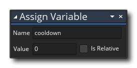
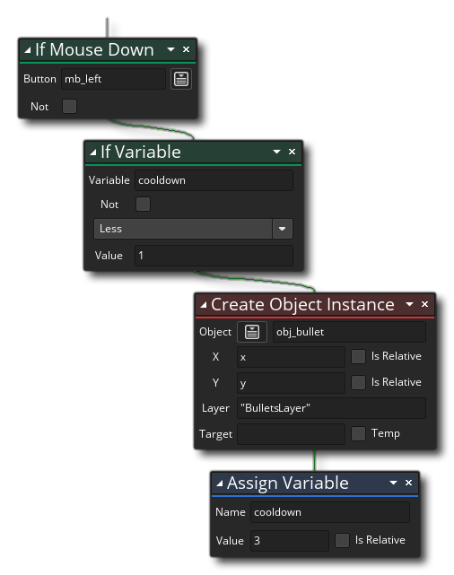
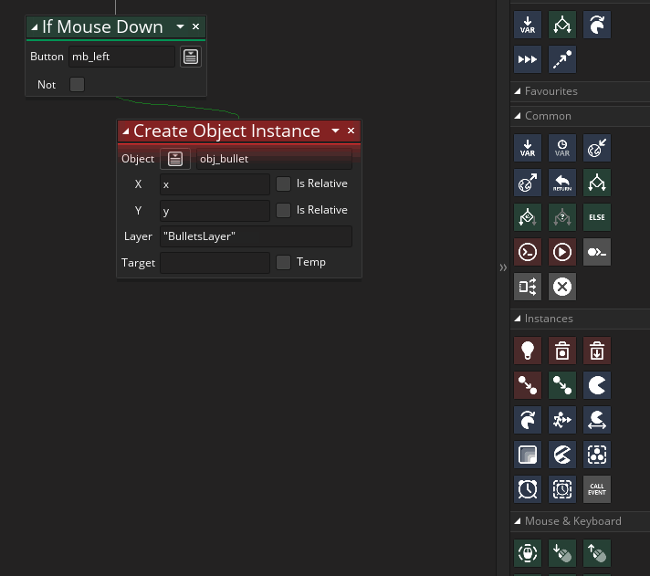
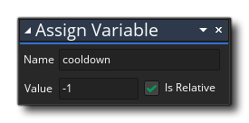
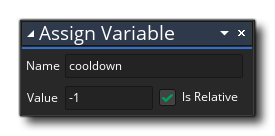
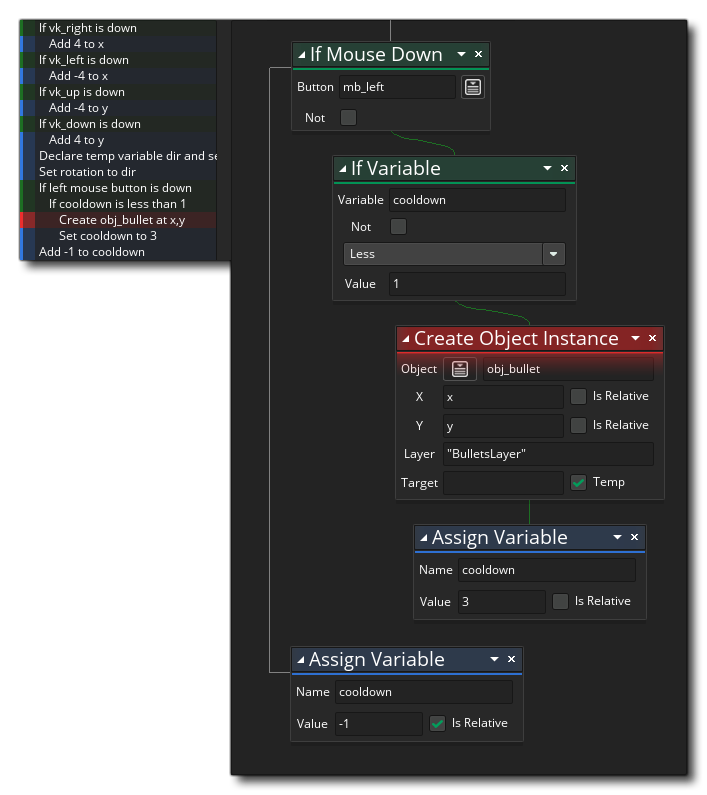

At the moment, our bullets are created 1 per game frame (every time the game loops round and performs the Step Event again), which is a bit too fast for what we require. So now we need to slow the rate of fire down a bit. For this we need to add a Create Event for the object "obj_player", and in it add the following action: 
All we are doing here is preparing a variable called "cooldown" for use later on in the game - remember, the Create Event is only run once when the instance is first created, so this variable is being initialised to 0 once only. We've seen built-in variables already, but this is one you are creating and it's called an instance variable. Instance variables are valid for any event in an instance and can be changed or read in other action blocks. However they are also unique to each instance, so if you have 100 instances of "obj_player" in your game, they will all have an instance variable "cooldown" since you defined it in the base object, but each one could have it set to a different value throughout the time the game runs.
We are now going to use this variable in the Step Event of the player object to control how often the shooting occurs, like this: 
What we have done is "nest" an if variable action  within the mouse down action, so it now reads "if the mouse is held down, and if the variable cooldown is less than 1... {do something}". That "do something" is create our bullet instance and then set the variable cooldown to 3 (using the actions Assign Variable
within the mouse down action, so it now reads "if the mouse is held down, and if the variable cooldown is less than 1... {do something}". That "do something" is create our bullet instance and then set the variable cooldown to 3 (using the actions Assign Variable  ), which means that the next game frame, the if variable condition will fail and no bullet will be created because "cooldown" is not less than 1.
), which means that the next game frame, the if variable condition will fail and no bullet will be created because "cooldown" is not less than 1.
It can be a bit tricky to reorganise your actions so the following animation shows you how to add these actions correctly: 
There is a problem with this however... We don't count down the variable cooldown anywhere, which means we will fire one bullet and no more since it will be set to 3 and the subsequent "if" check will fail. So we need to add another Assign Variable  action after all the others and outside of the "if" checks:

action after all the others and outside of the "if" checks:

Note that we have checked the "relative" checkbox. By doing this we are adding -1 relative to the current value, ie: subtracting 1 from the current value. If this was not checked then we would be simply setting the cooldown variable to -1.
Your full action list should now look like this: 
If you test the game again now, you can see that the bullets fire a bit slower, but for our purposes it still seems too fast. This is now an easy thing to fix, as it requires a simple change to the number of frames we wait between creating each new bullet instance. So, change the "3" in the Step Event Assign Variable action  to 10 and test again.
to 10 and test again.